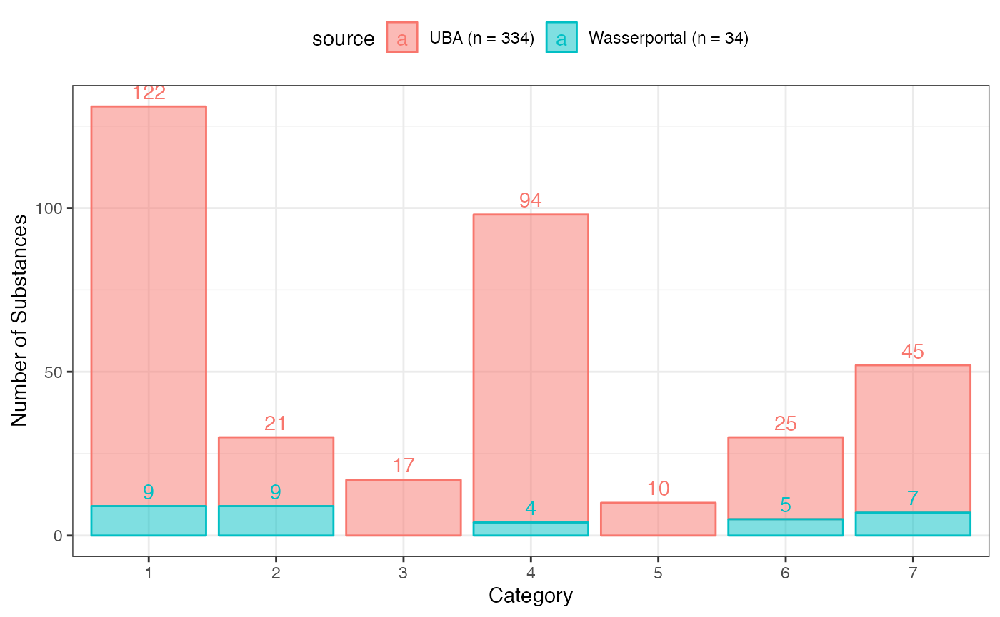
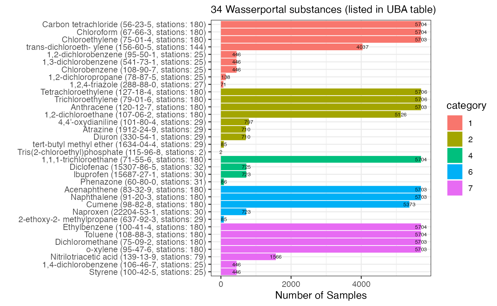

# Enable this universe
options(repos = c(
kwbr = 'https://kwb-r.r-universe.dev',
CRAN = 'https://cloud.r-project.org'))
# Install R package
install.packages('wasserportal')
# Load R package
library(wasserportal)
### For details see:
### https://kwb-r.github.io/wasserportal/articles/groundwater.html
### JSON files (see below) are build every day automatically at 5a.m. with
### continious integration, for build status, see here:
### https://github.com/KWB-R/wasserportal/actions/workflows/pkgdown.yaml
### GW quality (all available parameters!)
gwq_master <- jsonlite::fromJSON("https://kwb-r.github.io/wasserportal/stations_gwq_master.json")
gwq_data <- jsonlite::fromJSON("https://kwb-r.github.io/wasserportal/stations_gwq_data.json") %>%
dplyr::mutate(Messstellennummer = as.character(Messstellennummer)) %>%
dplyr::left_join(gwq_master, by = c("Messstellennummer" = "Nummer"))
## GW Quality Data Availability by Parameter/Station
gwq_data_by_parameter <- gwq_data %>%
dplyr::select(.data$Messstellennummer,
.data$Parameter,
.data$Datum,
.data$Messwert) %>%
dplyr::group_by(.data$Parameter) %>%
dplyr::summarise(date_min = min(.data$Datum),
date_max = max(.data$Datum),
n = dplyr::n()) %>%
dplyr::arrange(dplyr::desc(.data$n))
#View(gwq_data_by_parameter)
gwq_data_by_parameter_and_station <- gwq_data %>%
dplyr::select(.data$Messstellennummer,
.data$Parameter,
.data$Datum,
.data$Messwert) %>%
dplyr::group_by(.data$Parameter,
.data$Messstellennummer) %>%
dplyr::summarise(date_min = min(.data$Datum),
date_max = max(.data$Datum),
n = dplyr::n()) %>%
dplyr::arrange(dplyr::desc(.data$n))
#> `summarise()` has grouped output by 'Parameter'. You can override using the `.groups` argument.
#View(gwq_data_by_parameter_and_station)
### Export data to EXCEL
gwq_data_list <- list(gwq_by_parameter = gwq_data_by_parameter,
gwq_by_parameter_and_station = gwq_data_by_parameter_and_station,
gwq_data = gwq_data,
gwq_master = gwq_master)
openxlsx::write.xlsx(x = gwq_data_list,
file = "wasserportal_gwq_data.xlsx",
overwrite = TRUE)
cas_reach <- wasserportal::readPackageFile(file = "cas_reach.csv")
cas_wasserportal <- wasserportal::readPackageFile(file = "cas_wasserportal.csv") %>%
dplyr::inner_join(cas_reach, by = "cas_number")
g <- cas_reach %>%
dplyr::mutate(source = sprintf("UBA (n = %d)", nrow(cas_reach))) %>%
dplyr::bind_rows(cas_wasserportal %>%
dplyr::mutate(source = sprintf("Wasserportal (n = %d)",
nrow(cas_wasserportal)))) %>%
ggplot2::ggplot(mapping = ggplot2::aes(x = forcats::as_factor(.data$category),
fill = .data$source,
col = .data$source)) +
ggplot2::geom_histogram(stat = "count", alpha = 0.5) +
ggplot2::geom_text(stat="count", ggplot2::aes(label=..count..), vjust=-0.5, position="stack") +
ggplot2::scale_x_discrete() +
ggplot2::theme_bw() +
ggplot2::labs(y = "Number of Substances", x = "Category")
#> Warning: Ignoring unknown parameters: binwidth, bins, pad
g
#plotly::ggplotly(g)
by_stations <- gwq_data_by_parameter_and_station %>%
dplyr::summarise(n_stations = dplyr::n()) %>%
dplyr::select(.data$Parameter, .data$n_stations)
wasserportal_substances <- gwq_data_by_parameter %>%
dplyr::left_join(by_stations, by = "Parameter") %>%
dplyr::right_join(cas_wasserportal, by = "Parameter") %>%
dplyr::arrange(.data$category,
dplyr::desc(.data$n),
dplyr::desc(.data$n_stations),
.data$name) %>%
dplyr::rename(name_uba = name,
name_wasserportal = Parameter) %>%
dplyr::select(.data$category,
.data$name_uba,
.data$name_wasserportal,
.data$cas_number,
.data$n,
.data$n_stations,
.data$date_min,
.data$date_max)
DT::datatable(wasserportal_substances, filter = "top", rownames = FALSE)
wasserportal_substances_plot <- wasserportal_substances %>%
dplyr::mutate(label = sprintf("%s (%s, stations: %d)",
.data$name_uba,
.data$cas_number,
.data$n_stations),
category = forcats::as_factor(.data$category))
wasserportal_substances_plot$label <- factor(wasserportal_substances_plot$label,
levels = wasserportal_substances_plot$label)
wasserportal_substances_plot %>%
ggplot2::ggplot(ggplot2::aes(x = .data$n,
y = .data$label,
label = .data$n,
fill = .data$category)) +
ggplot2::scale_y_discrete(limits = rev) +
ggplot2::geom_bar(stat = "identity") +
ggplot2::geom_text(size = 2, nudge_x = -1) +
ggplot2::theme_bw() +
ggplot2::labs(subtitle = sprintf("%d Wasserportal substances (listed in UBA table)",
nrow(wasserportal_substances_plot)),
y = "",
x = "Number of Samples")